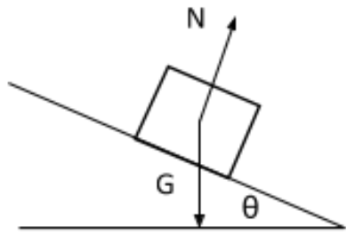

1) Context: Students have learned about electric flux both qualitatively and quantitatively.
They are qualitatively deriving Gauss’s law by drawing field lines through a closed surface.

The students are given the following instructions: “Consider the illustrations shown below.
Each picture contains one positive point charge and an imaginary box. In each case, determine
if there is net flux through the box. The total electric flux through the imaginary box is the
sum of the electric flux through each surface of the box. Remember that when the angle between
the area vector of the surface and the direction of the electric field is greater than 90°, the
flux is negative. What does the flux through the box depend on? When is there more net flux,
less net flux, and zero net flux?”
A TA approaches a group and has a conversation with the students to check their understanding:
TA: Looking at the left picture, when the point charge is outside the box. What do the field lines look like?
S: Radiate out from the positive charge.
TA: OK, so what is the net flux?.
S: I think it’s negative, because the left side of the box is closer to the point charge,
so the flux into the box should be stronger than the flux out.
The TA’s job is to identify students’ difficulties and determine how to guide them through to a solution.
How should the TA respond to the students and why? Indicate where each response would be on a four
point scale with 4 being the highest (very acceptable response) and 1 being the lowest (Unacceptable response).
a. Tell them Gauss’ Law and ask them to draw field lines coming out of the point through the box.
Inform them that in this case all of the field lines entering the box leave the box. Ask them if this matters.
b. Ask the students what makes a field line count as positive or negative when considering net flux.
Ask the students if the field lines that are entering the box are also leaving the box.
Ask the students if some of the field lines entering the box do not leave the box.
c. Have them draw the field lines of the positive charge going into the box. If they incorrectly
assume the lines of the charge going into the box are not equal to the lines leaving, ask why do they think so?
d. Ask the students which faces of the box are relevant for finding the flux and if the number of field
lines will change when coming into those faces? Have them draw the area vector on each side of the box
and determine the sign of the flux through that side.
e. Ask the students why the field lines from the positive charge entering the box are considered negative
and the field lines leaving the box are positive. Ask them to draw the area vector on each side of the box.
Ask them how to determine the sign of the flux on each side of the box.
PCK-EM-2
2) Context: Students have learned Newton’s Laws in introductory Classical Mechanics and Coulomb’s Law.
The following question is presented to the students:
Initially two identical uncharged spherical conductors are each hanging from a long string and touching, presented in (fig. A).
A rod is charged and used to transfer -5 nC to each of the charge conductors.
The two charges then repel from each other with distance between the conductors being 10 cm (fig. B). W
hat are the masses of the conductors?
Student 1 asks: “I know how to find the Coulomb force, but how do I find the weight?”
Student 2 interjects: “What would you need to know to find out the weight?”
The TA’s job is to identify students’ difficulties and determine how to guide them through to a solution.
How should the TA respond to the students and why? Indicate where each response would be on a four
point scale with 4 being the highest (very acceptable response) and 1 being the lowest (Unacceptable response).
a. Ask the students to draw a free body diagram of the two pith balls. If necessary, guide them to label all forces
acting on the pith balls with the correct magnitudes and direction of each force. Tell them then to use their previous
knowledge of vector components to get the answer.
b. Have the students draw a force diagram for each of the pith balls. After they have drawn the force diagrams correctly,
ask them which of the forces they have labeled is known as the weight of an object. This should prompt them to realize
that with vector addition, they can set the vertical forces and their components equal to each other and find the mass of the pith balls.
c. Tell the students to draw a FBD of the pith balls. Ask them, “What forces are acting on the pith balls?”.
Then ask the students, “Which force involves the weight of the pith balls?”. Follow up by describing how to set
the vertical forces to zero, the horizontal forces to zero and using both equations together to find the weight.
d. Tell the students that Newton’s 3rd Law and Coulomb’s law are connected in this system. Have the students draw
a FBD and ask them which force is equal to the force of gravity and which force equals Coulomb’s force. Follow up
with asking them which forces cancel each other out?
e. Ask the students to draw a free body diagram of a single hanging pith ball. Ask them if the system is at rest,
and which forces are summing to zero. Ask the students to consider the components of the tension and if they
can calculate any of the components.
PCK-EM-3
3) Context: Students have learned Coulomb’s Law.
Students are exploring the forces exerted by two identical charged pith balls on each other in different cases.
They correctly understand that the two balls when hung from the same point would hang at the same angle if they had the same charge.
They are predicting the angles the balls would hang if one ball had half the charge of the other.
The TA comes to the table and asks them their prediction. They understand that the repulsive force is present
on each pith ball but seem to think that this force pushing on one of the balls is not equal to the force pushing on the other.
The TA’s job is to identify students’ difficulties and determine how to guide them through to a solution.
How should the TA respond to the students and why? Indicate where each response would be on a four
point scale with 4 being the highest (very acceptable response) and 1 being the lowest (Unacceptable response).
a. Ask them if this system is in motion. Then ask if they can draw a FBD of this electrostatic system for each pith ball.
For the repulsive force of each ball pointing away from each other, ask if this force is the same or different.
b. Ask the students which of Newton’s Laws are being demonstrated in this system. Ask them about Coulomb’s Law as
well and which force is responsible for the angle. Ask them if the force exerting on ball one is dependent on both the charge of itself and ball 2?
c. Refresh the students' memory of Newton’s 3rd Law and Coulomb’s Law. Ask them to draw a FBD with the respective force vectors.
Tell them to apply Newton’s 3rd Law.
d. Ask them to draw a FBD for both of the pith balls. Remind them that Newton’s Law from introductory physics applies
in this equilibrium system and explain to them that is why the horizontal components of each of the pith balls equal one another.
e. Have the students draw a FBD of the system of the two balls with one of the pith balls having half the charge of the other.
Ask them, “Are the balls in static equilibrium?”. Have them identify the repulsive forces in their diagrams. Ask them,
“Does the electric force in Coulomb’s law equation only involve one of the charges or both?”